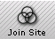
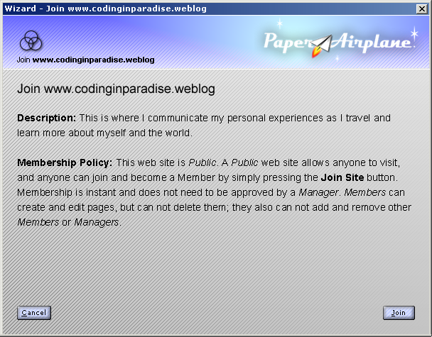

| | |
Table of Contents | Last | Next
Walkthrough - Next-Generation Browsing
Easily Join and Unjoin Two Way Web Sites
Paper Airplane standardizes the way in which people can join and unjoin Two Way Web Sites. While browsing a Two Way Web Site you can simply press the Join Site button to become a member of that site:

The Join Site Button
You are then presented with the Join Wizard, providing further details about the Two Way Web Site you are about to join:

Join Dialog
Unjoining a site is as easy. Simply press the Unjoin Site button to stop being a member of the current Two Way Web Site:

The Unjoin Site Button
For more details see Joining and Unjoining a Two Way Web Site.